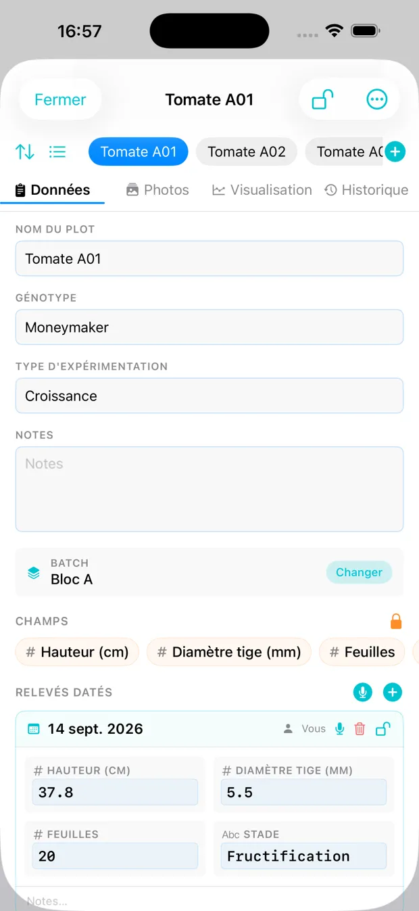
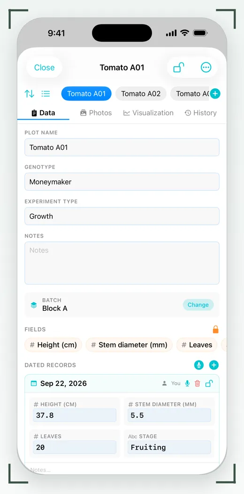
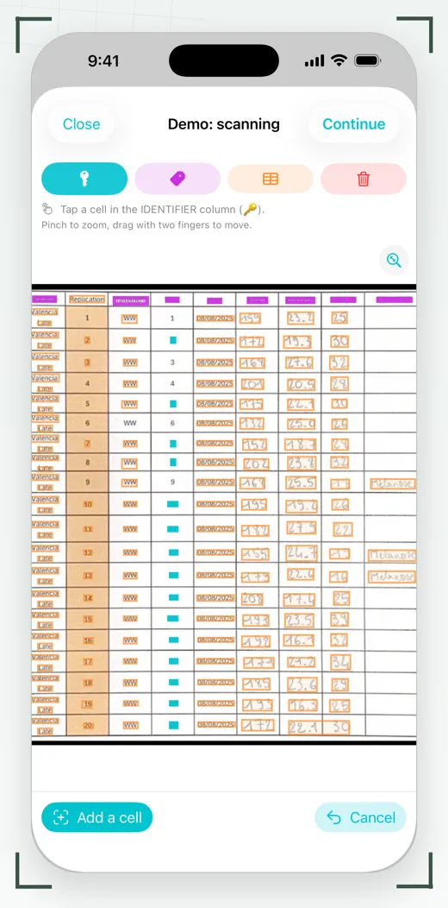
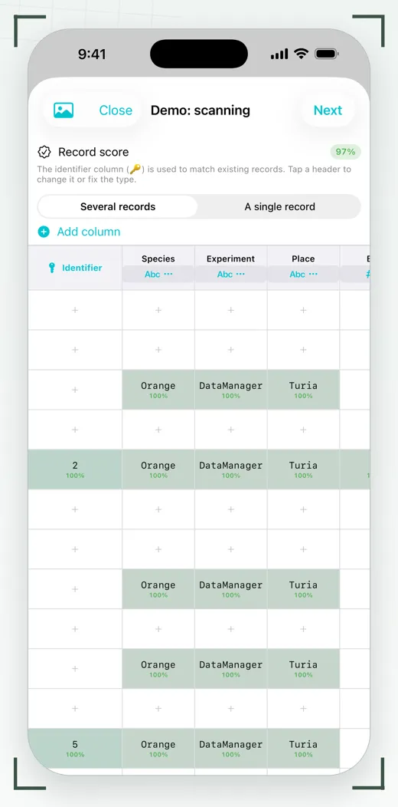
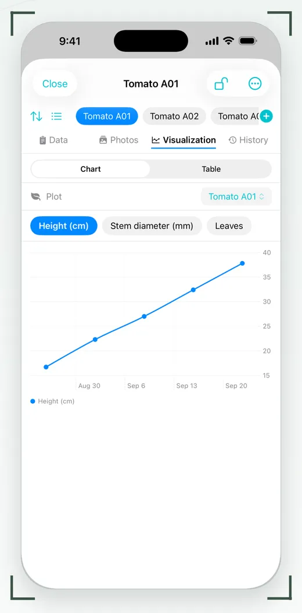
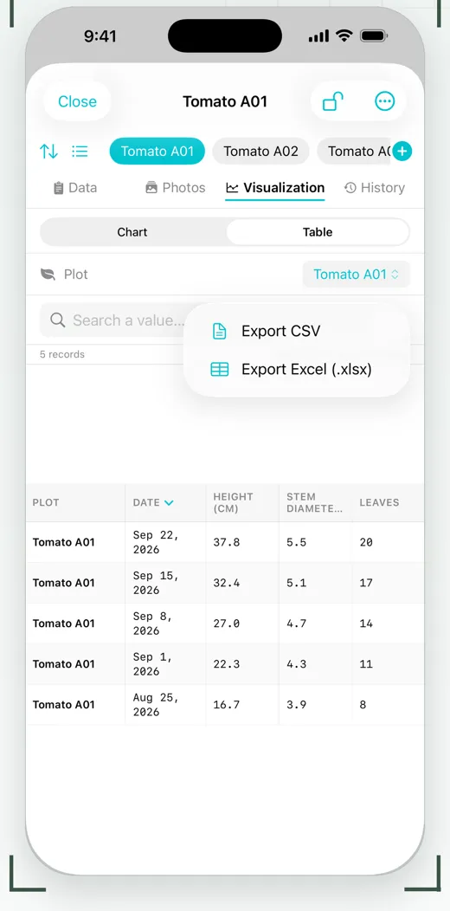
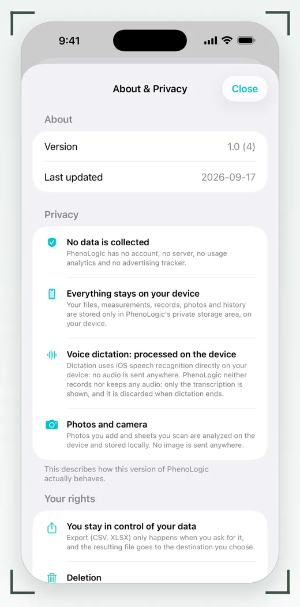

PhenoLogic
Le carnet de terrain pour le phénotypage.
SystemBiology est le studio d'un étudiant développeur. Chaque app part d'un besoin concret de laboratoire ou de terrain.
Le carnet de terrain pour le phénotypage.
Une nouvelle app est en préparation.
PhenoLogic est un carnet de terrain pour vos relevés de phénotypage. Saisissez, dictez ou scannez vos mesures, puis exportez un fichier Excel ou CSV prêt pour l'analyse. Tout reste sur votre appareil.

| plot | date | height_cm | stem_mm | leaves |
|---|
Notez vos mesures au pied de la plante, au doigt ou à la voix, sans papier.
Photographiez vos anciennes fiches de notation : les valeurs sont reconnues sur l'appareil et vous les vérifiez avant d'enregistrer.
Une ligne par relevé, une colonne par variable, en .xlsx ou en .csv, vers l'app de votre choix.
Tout ce qu'il faut pour suivre vos essais plot par plot, et rien de plus.
Définissez vos propres variables (nombres ou texte), regroupez vos plots en lots et ajoutez des photos de suivi.
Gardez les mains libres : la reconnaissance vocale d'iOS fonctionne sur l'appareil, aucun son n'est envoyé ni conservé.
Numérisez vos feuilles de notation existantes, colonne identifiant comprise, pour les rattacher à vos plots.
Chaque variable en graphique ou en tableau, plot par plot, pour repérer une anomalie dès le terrain.
Un tableau propre, prêt pour Excel, R ou Python. L'import vous permet aussi de reprendre des données existantes.
Retrouvez et restaurez une version précédente, et verrouillez une fiche pour éviter les modifications accidentelles.






Pour les TP, les stages et les mémoires : des données propres dès la sortie sur le terrain.
Pour les campagnes de phénotypage : moins de ressaisie, moins d'erreurs, plus de temps pour l'analyse.
Pour les sorties pédagogiques : chaque groupe rend un fichier au même format, facile à comparer.
PhenoLogic n'a ni compte, ni serveur, ni outil d'analyse d'usage, ni traceur publicitaire. Vos données restent sur votre appareil.
PhenoLogic est gratuite sur l'App Store.
Sur iPhone avec iOS 17 ou ultérieur et sur iPad avec iPadOS 17 ou ultérieur. Elle s'installe aussi sur les Mac à puce Apple.
Non. Saisie, dictée, scan, graphiques et export fonctionnent sans réseau, en plein champ.
L'export et l'import se font en Excel (.xlsx) et en CSV, lisibles par Excel, Numbers, LibreOffice, R ou Python.
Photographiez la fiche, indiquez la colonne qui sert d'identifiant, puis vérifiez les valeurs reconnues et leur score de confiance avant d'enregistrer. Une fiche bien éclairée et à plat donne les meilleurs résultats.
En français, en anglais et en espagnol.
La prochaine app de SystemBiology est en préparation. Écrivez-nous pour être prévenu de sa sortie.
Une question, un bug ou une idée de fonctionnalité : écrivez-nous, nous répondons à chaque message.